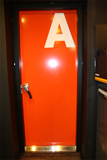
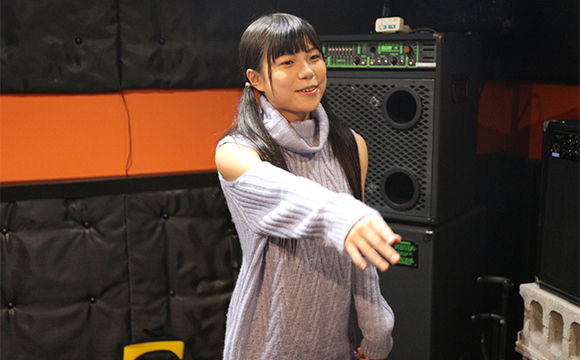
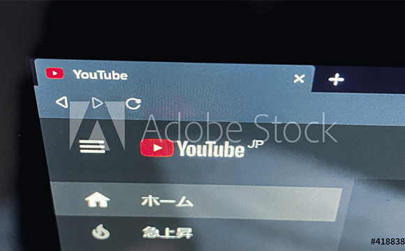
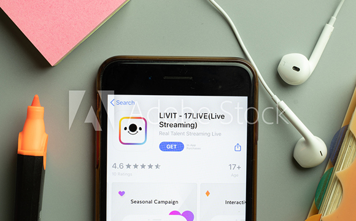

- TOP
- MV制作
MV（ミュージックビデオ）で自分の魅力をアピールしてみよう
～MV制作～

福岡の「Vocal school Pure breed（ピュア ブリード）」では、ボイストレーナー・沖島ゆきによるボイストレーニングの他、MV制作サービス、レコーディングサービスも行っています。当スクールでの成長や成果を形として残し、また、それらを配信したりすることで、より多くの方に、ご自身の魅力発信につなげていただければと考えております。なお、MV制作については、当スクールの生徒さん以外の、一般の方からのご相談も承りますので、遠慮なくご相談ください。
オリジナルMVは作った方がいいの？
MV（Music Video）は、PV（Promotion Video）とも呼ばれ、多くは宣伝を目的に音楽パフォーマンスの動画を制作します。機材の進化や普及により、手軽に動画の撮影・編集ができるようになっていますので、積極的に利用して自分らしさを演出したMVを作ってみましょう。
当スクールでは、自分の歌を客観的に聞くためにレコーディングを重要視するように、MV制作を通じて自分のパフォーマンスを客観視することも、非常に大切なことだと考 えています。また近年は、動画配信やライブ配信もSNSなどを通じて簡単に行えるようになっています。より多くの方へ、自分のパフォーマンスを届けることで、ファン獲得やステージ等への出演機会にもつながるかもしれません。レッスンの成果を形に残したり、成長を確認したりするためにも、ぜひ活用してみましょう。

YouTube配信のメリット
YouTubeで、それまで知らなかったアーティストを見つけ、ファンになったということはありませんか？ 現在では、主要なアーティストも何らかの形で、YouTubeで情報発信していることがほとんど。また、無名のアーティストであっても、有名アーティストと同じようにYouTubeでチャンネルを持ったり、動画を配信したりすることが非常に簡単に行えます。MVを制作したなら、ぜひYouTubeで配信し、SNSを活用して拡散してもらいましょう。
数多くある動画配信サービスの中、YouTubeをおすすめする理由が、その、他を圧倒する利用者数とアクセス数です。日本国内では全年代で約7割の人がYouTubeを視聴しているという調査結果があります。また、YouTubeなら、国内だけでなく海外の人に見てもらうことも簡単にできます。反面、それだけライバルも多いのですが、まず第一歩としては、そこに動画があるのかないのかが重要です。名刺代わりにテープやCDを渡す時代から、URLを紹介する時代になってきているのです。
これからの時代、せっかくMV制作をしても、インターネット上にないのなら、「存在しないに等しい」と言っても過言ではないでしょう。当スクールでは、YouTubeを使った動画配信のお手伝いやアドバイスも可能です。ぜひ検討してみてください。

ライブ配信のメリット
完成したMVをアップロードして配信するYouTubeと同時に、近年注目を集めているのが、ライブ配信です。文字通り、インターネットを通じて不特定多数の人に生中継をすることを意味します。ライブ配信は、作り上げられたMVを見てもらうことよりも、よりアーティストその人の魅力を伝えられる手段の一つ。とっさの一言や、ちょっとした仕草で、より身近に感じてもらえてファン獲得につながることもあります。コメントを通じたコミュニケーションで、臨場感も高まることでしょう。
インターネットにつながったスマートフォンがあれば、誰でも・どこでも・簡単にライブ配信ができる時代になっています。ライブ配信のプラットフォームも多数登場していますが、当スクールがおすすめしているのが、17Liveです。

17Live配信 公式サポーターです！
当スクール代表 ボイストレーナー「沖島ゆき」は、2021年3月に17Liveの公式サポーターに就任しています。「だれもがなにかのアーティスト」をキャッチコピーに、全世界154地域で4,500万人がダウンロードしている17Liveは、国内シェア63.9％を占めています。ファンとアーティストとのコミュニケーションツールとしても注目の17Live。代表・沖島ゆきからのスカウト形式で、公式ライバーとして活躍することも可能です。配信に際しては、ラジオパーソナリティとしての経験もある私からアドバイスできることも多々ありますので、どうぞお気軽にご相談ください。